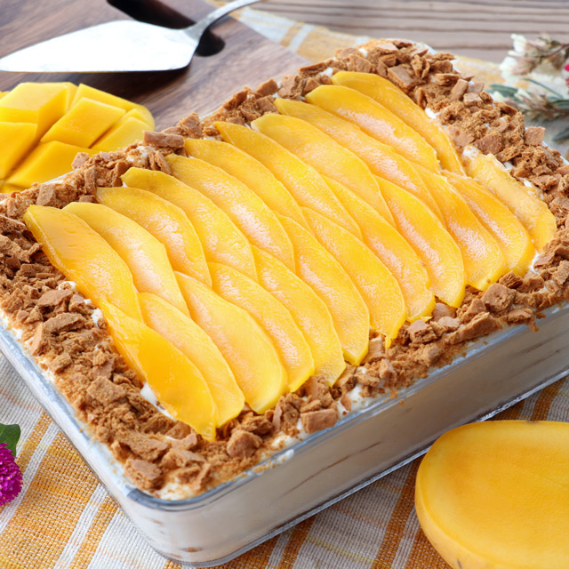

Name:
Rod Aimon Trinquite
Birthdate:
September 26, 2005
Address:
Brgy. Culit, Nasipit, Agusan del Norte
Occupation:
Student
Rod Aimon Trinquite
September 26, 2005
Brgy. Culit, Nasipit, Agusan del Norte
Student
I grew up in a small town surrounded by nature, which inspired my love for the outdoors and adventure.
During my teenage years, I discovered my passion for technology and began exploring programming and web development.
In college, I honed my skills in web development and worked on several projects that helped me gain real-world experience.

Mango float is a popular Filipino dessert made with layers of graham crackers, whipped cream, and ripe mangoes. It is a sweet and refreshing treat that is perfect for hot summer days.
My favorite artist is Daniel Caesar, a talented singer and a songwriter for his captivating performances and soothing songs.
My favorite place is the Chocolate Hills in Bohol, Philippines. The unique geological formation of these hills creates a stunning landscape that is both beautiful and awe-inspiring.